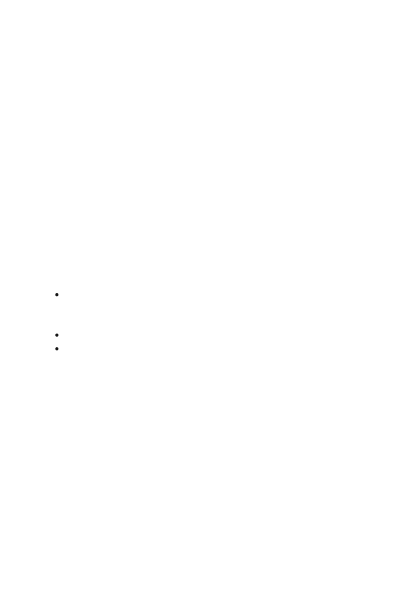

Recruit red teamers with both benign and adversarial mindsets.
Having red teamers with an adversarial mindset and security-testing experience is
essential for understanding security risks, but red teamers who are ordinary users of
your application system and haven’t been involved in its development can bring
valuable perspectives on harms that regular users might encounter.
Remember that handling potentially harmful content can be mentally taxing.
You will need to take care of your red teamers, not only by limiting the amount of time
they spend on an assignment, but also by letting them know they can opt out at any
time. Also, avoid burnout by switching red teamers’ assignments to different focus
areas.
Because a system is developed using a LLM base model, you may need to test at several
different layers:
The LLM base model with its safety system in place to identify any gaps that may
need to be addressed in the context of your application system. (Testing is usually
through an API endpoint.)
Your application system. (Testing is usually through a UI.)
Both the LLM base model and your application system before and after mitigations
are in place.
Consider conducting iterative red teaming in at least two phases:
1. Open-ended red teaming, where red teamers are encouraged to discover a variety
of harms. This can help you develop a taxonomy of harms to guide further testing.
Note that developing a taxonomy of undesired LLM outputs for your application
system is crucial to being able to measure the success of specific mitigation efforts.
2. Guided red teaming, where red teamers are assigned to focus on specific harms
listed in the taxonomy while staying alert for any new harms that may emerge. Red
teamers can also be instructed to focus testing on specific features of a system for
surfacing potential harms.
Be sure to:
Planning your red teaming
Where to test
How to test